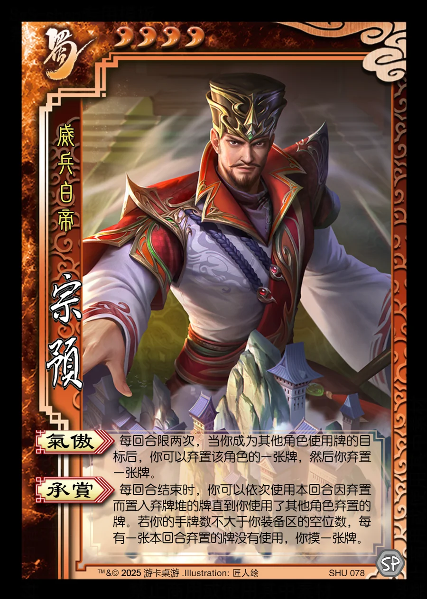

点击卡面查看大图
蜀
宗预
♥4威兵白帝
气傲
每回合限两次，当你成为其他角色使用牌的目标后，你可以弃置该角色的一张牌，然后你弃置一张牌。
承赏
每回合结束时，你可以依次使用本回合因弃置而置入弃牌堆的牌直到你使用了其他角色弃置的牌。若你的手牌数不大于你装备区的空位数，每有一张本回合弃置的牌没有使用，你摸一张牌。

点击卡面查看大图
威兵白帝
每回合限两次，当你成为其他角色使用牌的目标后，你可以弃置该角色的一张牌，然后你弃置一张牌。
每回合结束时，你可以依次使用本回合因弃置而置入弃牌堆的牌直到你使用了其他角色弃置的牌。若你的手牌数不大于你装备区的空位数，每有一张本回合弃置的牌没有使用，你摸一张牌。